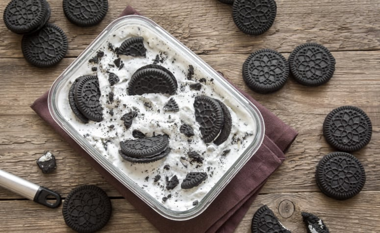

Praticando 3 - Receita de bolo com listas
Pavê de Oreo
Voltar ao menu principal

Ingredientes
- 1/2 litro de leite
- 3 gemas de ovo (peneiradas)
- algumas gotas de essência de baunilha (opcional)
- 200 g de chocolate meio amargo
- 500 ml de creme de leite fresco
- 1 lata de leite condensado
- 2 colheres de maizena
- 15 bolachas oreo
- 1 caixinha de creme de leite
- 2 colheres de açúcar
Modo de preparo
- Numa panela, junte o leite, leite condensado, as gemas, a maisena e a baunilha. Leve ao fogo, mexendo sempre até engrossar.
- Coloque o creme numa travessa grande, deixe esfriar e depois leve à geladeira.
- Depois que o creme estiver gelado, pique as bolachas Oreo com as mãos em pedaços pequenos e distribua por cima dele.
- Derreta o chocolate em banho-maria e acrescente o creme de leite.
- Mexa até ficar homogêneo.
- Deixe esfriar e jogue por cima dos biscoitos, espalhando até cobrir por completo.
- Bata o creme de leite fresco junto com o açúcar na batedeira até atingir a consistência de chantilly.
- Coloque por cima do chocolate derretido.
- Se desejar, polvilhe chocolate em pó por cima.
- Leve à geladeira.
Fonte:
https://www.tudogostoso.com.br/receita/163569-pave-de-oreo.html